⛏️ Minecraft MODサーバー接続手順
CurseForge をダウンロード
公式サイト「CurseForge」からアプリをダウンロードします。
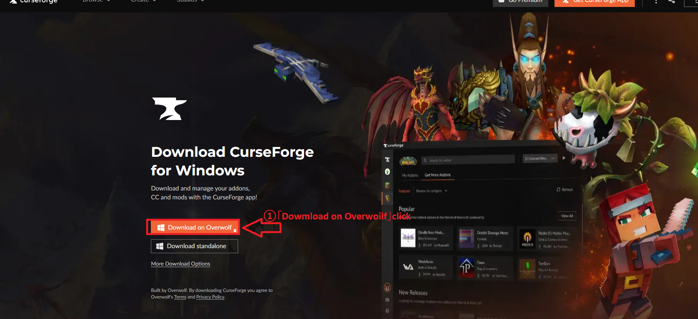
CurseForge をインストール
ダウンロードしたインストーラーを実行し、案内に従ってインストールします。
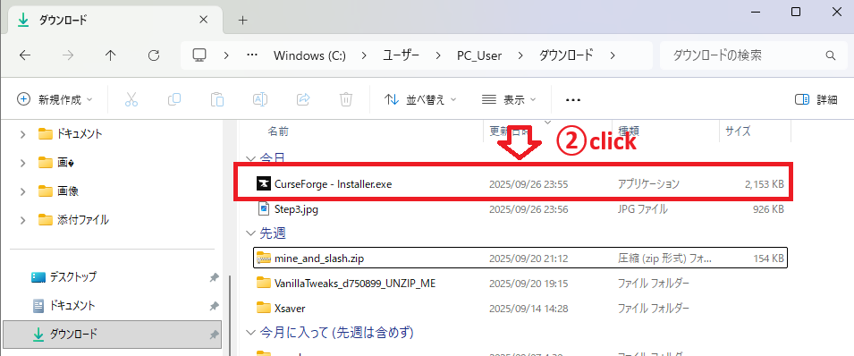
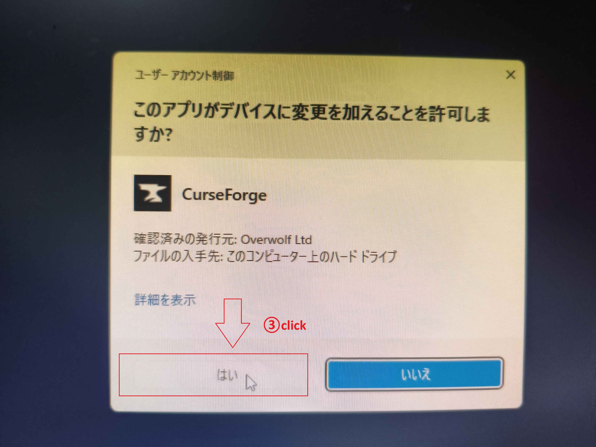
Minecraft を選択
CurseForge を起動し、ゲーム一覧から Minecraft を選択します。
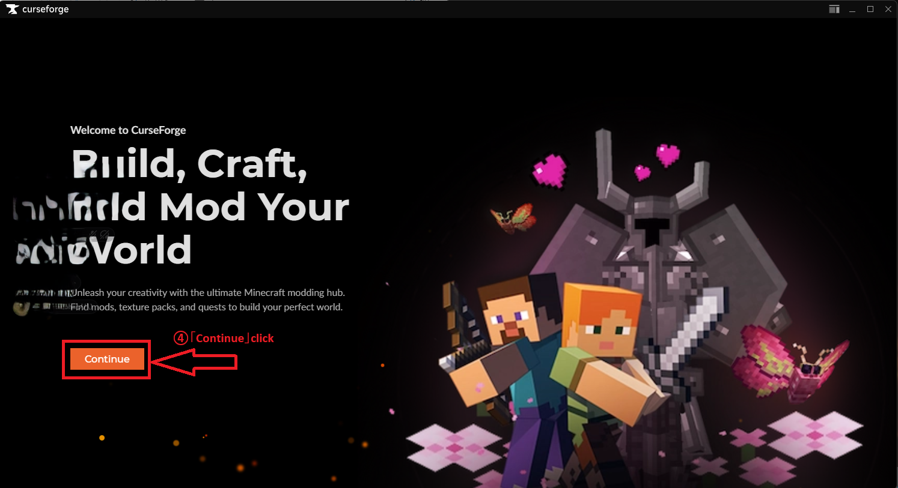
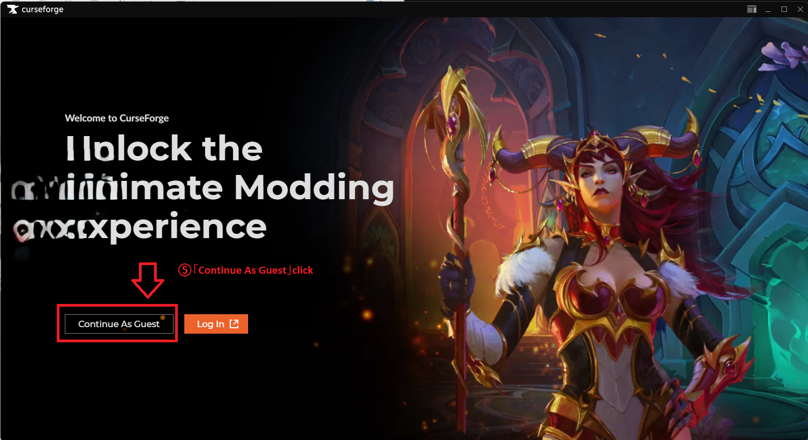
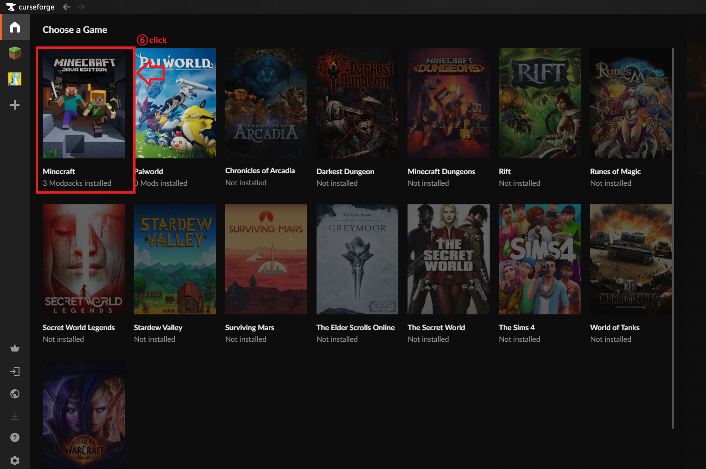
Modpack（ZIP）をダウンロード
下のボタンから ZIP をダウンロードしてください。ブラウザでブロックされた場合は許可してください。
Modpack（ZIP）
Modpack を読み込む
CurseForge の「カスタムプロファイルの作成」から、先ほどダウンロードした ZIP を読み込みます。
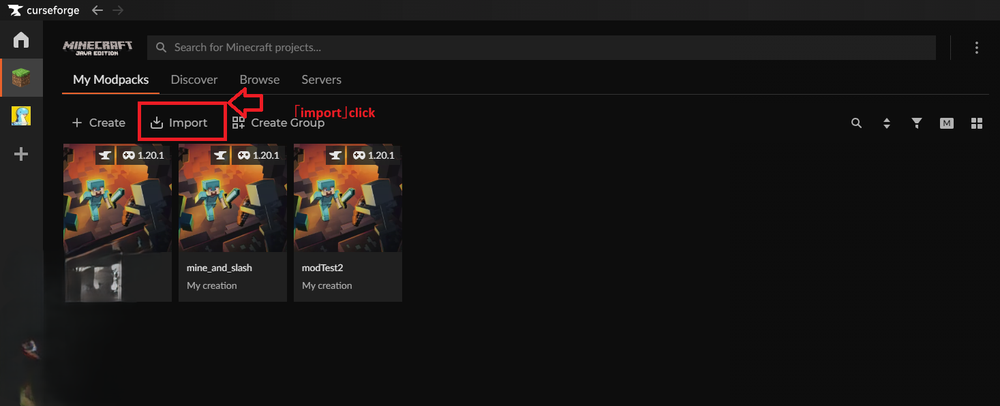
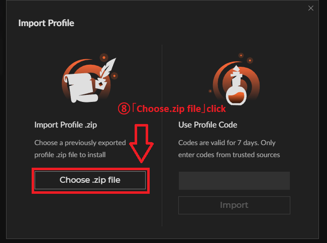
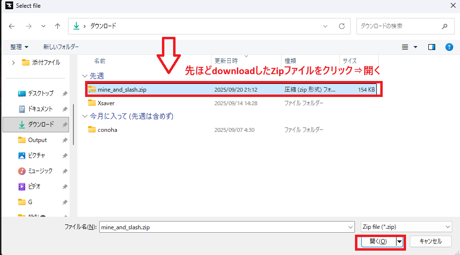
Minecraft を起動
作成したプロファイルから Minecraft を起動します。
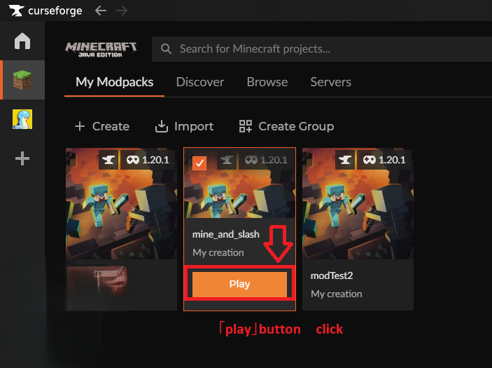
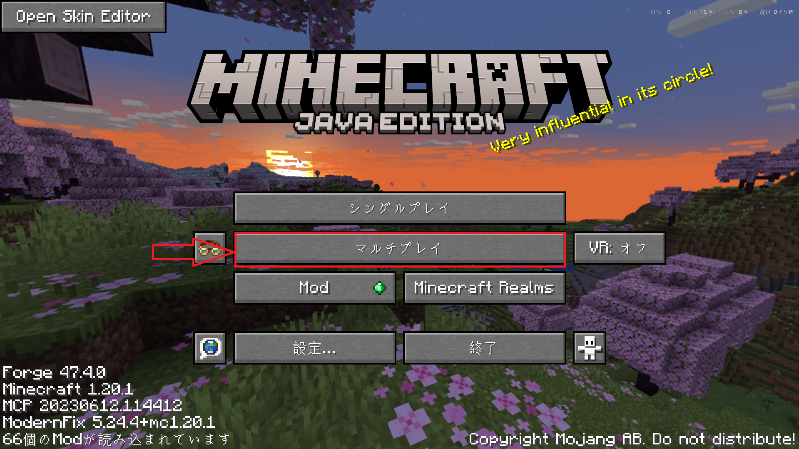
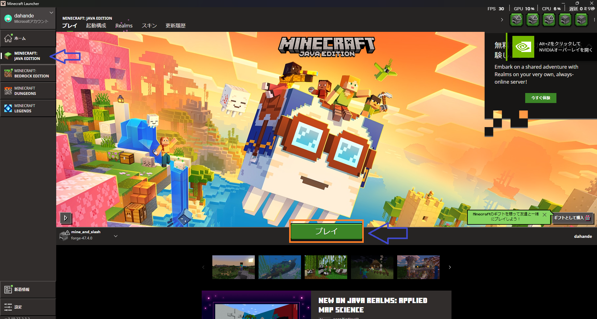
サーバーに接続
「マルチプレイ」からサーバーを追加し、以下の IP で接続してください。
🔌 サーバー接続情報
IP: 85.131.247.87
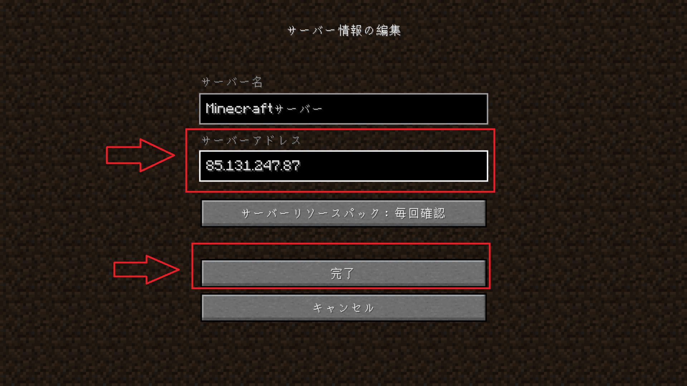